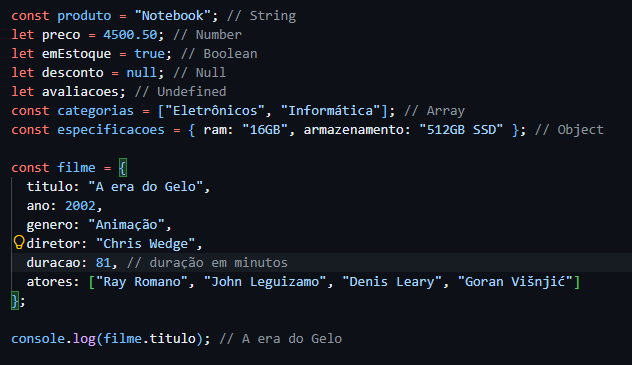

Variáveis em JavaScript
Em JavaScript, uma variável é um contêiner para armazenar dados
Nós usamos principalmente duas formas para declarar variáveis:
let: Usado para declarar variáveis que podem ser reatribuídas.
const: Usado para declarar variáveis que não podem ser reatribuídas.
Tipos de Dados em JavaScript
JavaScript possui vários tipos de dados, e são alguns deles:
- String: Representa uma sequência de caracteres. Exemplo: "Olá, mundo!"
- Number: Representa números, tanto inteiros quanto decimais. Exemplo: 42, 3.14
- Boolean: Representa valores lógicos, podendo ser verdadeiro (true) ou falso (false).
- Object: Representa coleções de dados e funcionalidades. Exemplo: { nome: "João", idade: 30 }
- Array: Representa uma lista de valores. Exemplo: [1, 2, 3, 4]
- Null: Representa a ausência intencional de qualquer valor.
- Undefined: Representa uma variável que foi declarada mas ainda não foi atribuída a um valor.
É importante entender os tipos de dados em JavaScript, pois eles determinam como os valores podem ser manipulados e utilizados no código.
Veja o exemplo abaixo na imagem:
